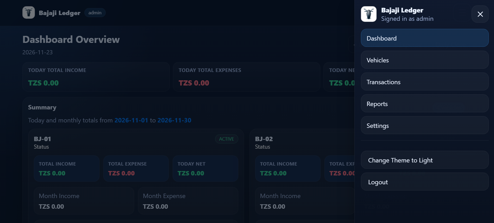

Software & Web · Case study
Vehicles Ledger System
Bajaji Ledger is a management system designed to simplify and streamline bajaji operations by providing a centralized platform for managing bajaji records, driver information, daily income collections, expenses, fuel costs, maintenance, service records, debts, and payment tracking. The system helps monitor financial performance by automatically calculating total revenue, operational expenses, and net profit while gen

The objective
Lack of an integrated system for tracking bajaji income, expenses, and performance, leading to challenges in financial management, driver accountability, and business monitoring.
My role
Designed and developed a centralized Bajaji Ledger management system for tracking vehicle records, daily income, expenses, driver performance, and financial reports, improving operational efficiency, accountability, and financial transparency.
Approach
PHP, MySQL, HTML, CSS, JavaScript, Bootstrap, and Visual Studio Code, using database management, responsive web development, and financial record-tracking techniques.
Result
Successfully developed a functional Bajaji Ledger system with a centralized dashboard for monitoring income, expenses, vehicle performance, and financial records, providing improved accuracy, transparency, and easier business decision-making.